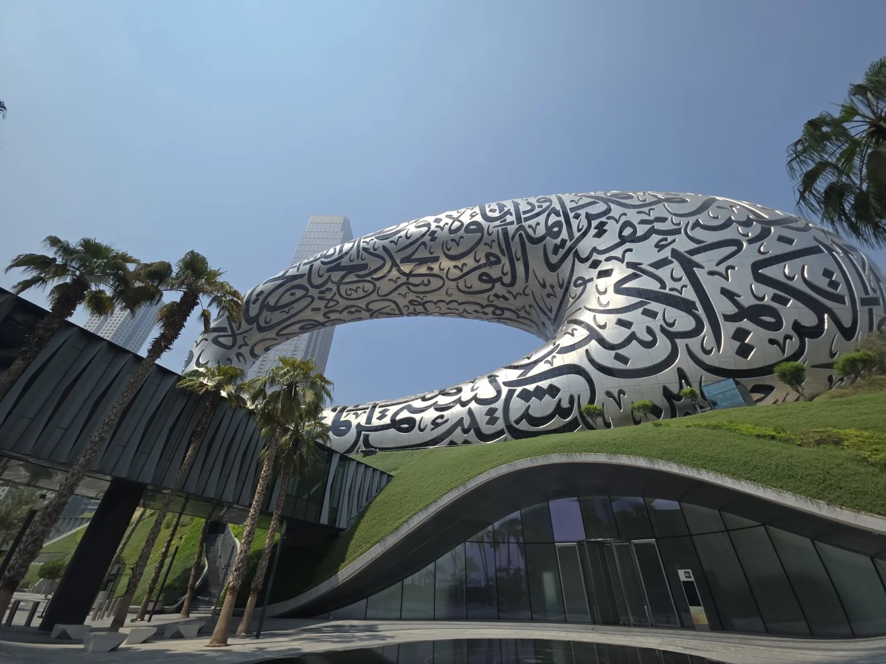
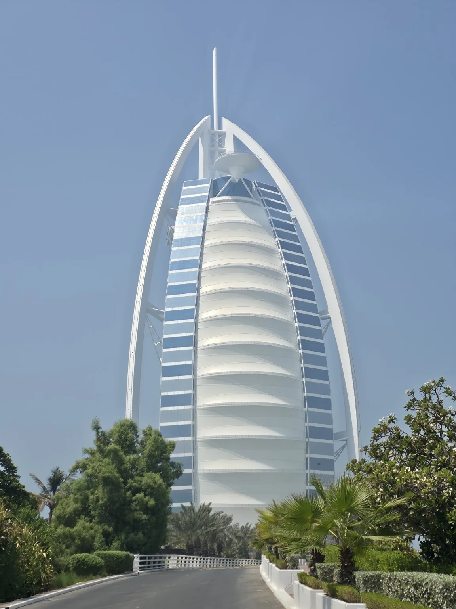
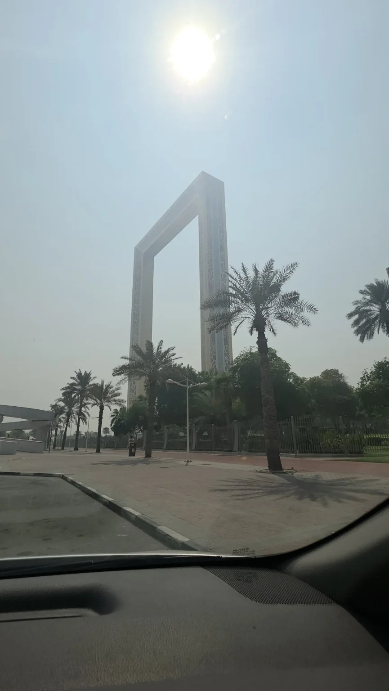
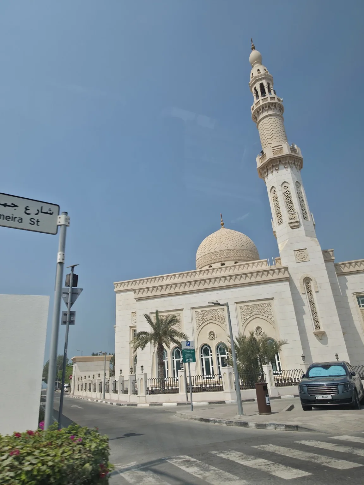
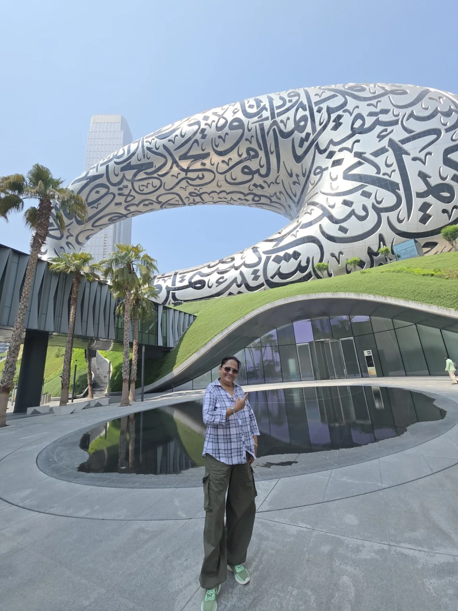
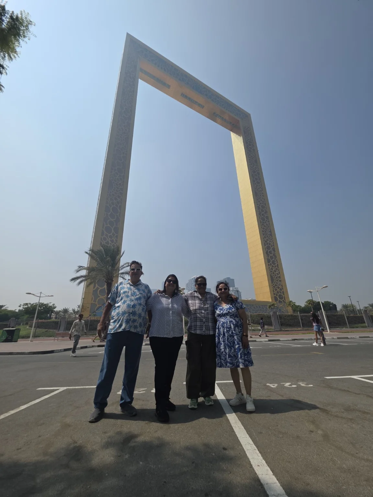
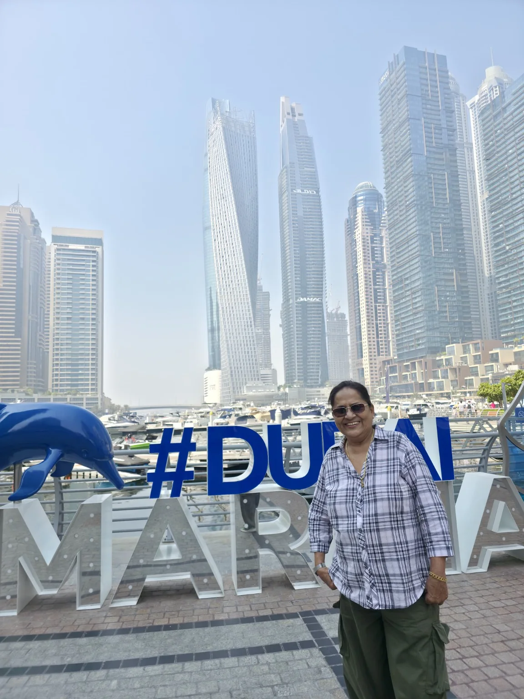
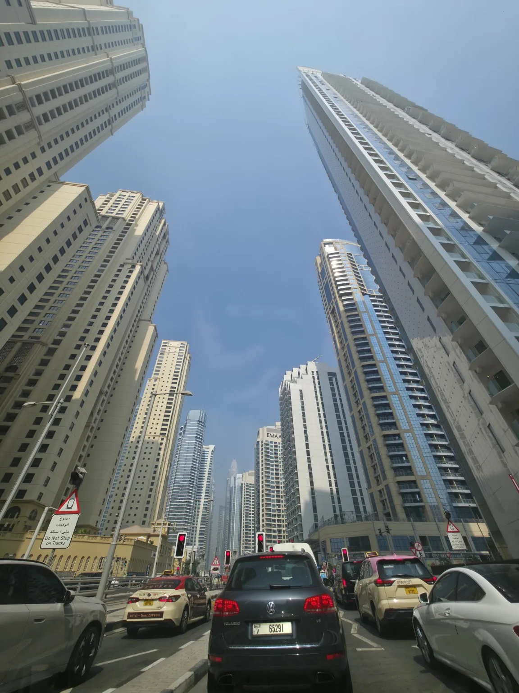
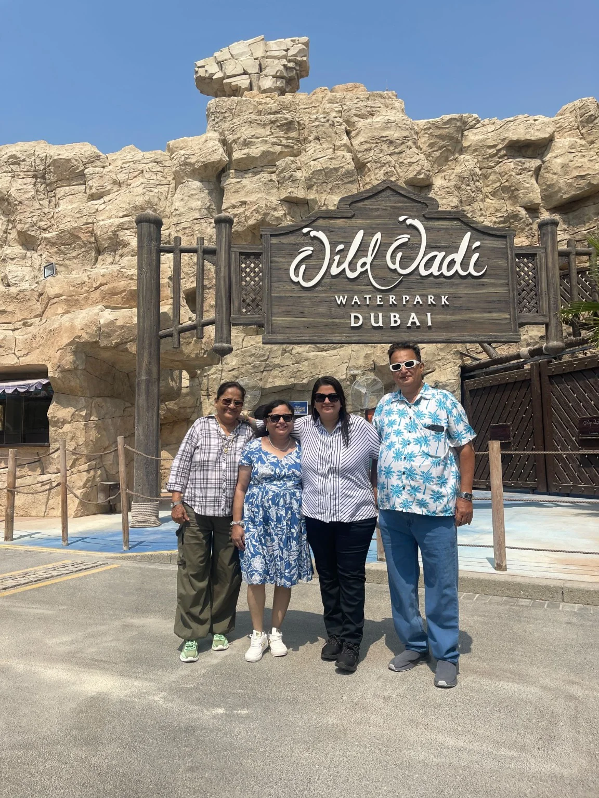
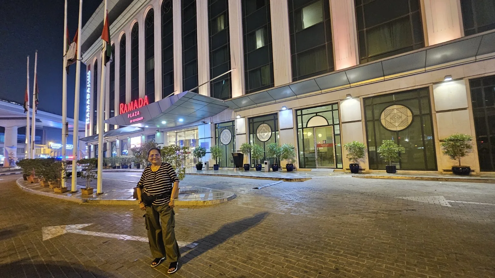

आज सकाळी ठीक साडेदहा वाजता आम्ही Ramada Plaza by Wyndham Dubai Deira येथून हाफ-डे सिटी टूरसाठी निघालो. पल्लवी, तिचे आई-वडील आणि मी—आम्ही चौघांनी आज दुबईतील आधुनिक वास्तू, Marina, Jumeirah, प्रसिद्ध पर्यटनस्थळे आणि शहराचे सुंदर नियोजन अनुभवले. आमच्या ड्रायव्हरने वाटेत विविध ठिकाणांची माहिती दिली आणि त्यामुळे हा प्रवास फक्त sightseeing न राहता दुबईला समजून घेण्याचा सुंदर अनुभव ठरला.
१. Museum of the Future

आजच्या दुबई दर्शनाची सुरुवात भविष्यातील कल्पनांना साकार करणाऱ्या Museum of the Future पासून झाली. चांदीसारख्या बाह्यभागावर सुंदर अरबी कॅलिग्राफी आणि मध्यभागातील मोठी पोकळी यामुळे ही वास्तू जगातील वैशिष्ट्यपूर्ण आधुनिक इमारतींपैकी एक वाटते. विज्ञान, तंत्रज्ञान, कृत्रिम बुद्धिमत्ता, अंतराळ आणि भविष्यातील मानवी जीवन याबद्दलच्या कल्पना येथे मांडल्या जातात.
२. Burj Al Arab

समुद्राच्या किनाऱ्यावर उभारलेले Burj Al Arab हे दुबईच्या आधुनिक वास्तुकलेचे प्रसिद्ध प्रतीक आहे. त्याची जहाजाच्या पालासारखी रचना आणि आसपासची हिरवाई यामुळे हा परिसर अतिशय आकर्षक दिसतो.
३. Dubai Frame

Zabeel परिसरातील Dubai Frame ही विशाल चौकट जुन्या आणि आधुनिक दुबईमधील प्रतीकात्मक दुवा आहे. या वास्तूमुळे दुबईचा भूतकाळ, वर्तमान आणि आधुनिक शहरी विकास यांचा सुंदर संदर्भ समोर येतो.
४. Jumeirah परिसरातील मशिद आणि Jumeirah Street

या फोटोमध्ये सुंदर अरबी वास्तुशैलीतील मशिद, घुमट आणि उंच minaret दिसत आहेत. Jumeirah परिसरात आधुनिक दुबईसोबत पारंपरिक इस्लामी वास्तुकलेची सुंदर झलक अनुभवायला मिळते.
५. Museum of the Future – माझा सुंदर क्षण

Museum of the Futureसमोरचा हा माझा खास फोटो. इतक्या वैशिष्ट्यपूर्ण वास्तूसमोर उभे राहून दुबईची भविष्याकडे पाहण्याची दृष्टी प्रत्यक्ष अनुभवता आली. या क्षणाची आठवण माझ्यासाठी कायमची खास राहील.
६. Dubai Frame – आम्ही चौघे

Dubai Frameसमोर पल्लवी, तिचे आई-वडील आणि मी—आम्ही चौघांनी घेतलेला हा सुंदर आठवणींचा फोटो. एकत्र फिरणे, नवीन ठिकाणे पाहणे आणि प्रत्येक क्षण मनापासून अनुभवणे यामुळे आजचा दिवस अधिकच आनंदी झाला.
७. Dubai Marina – #DUBAI

Marina परिसरातील समुद्र, yachts आणि उंच इमारतींच्या पार्श्वभूमीवरचा हा माझा सुंदर फोटो. आधुनिक दुबईचे जिवंत आणि आकर्षक रूप येथे अनुभवायला मिळते.
८. Dubai Marina – गगनचुंबी इमारती

Dubai Marinaमध्ये समुद्र, yachts आणि उंच residential व hotel towers यांचा सुंदर मिलाफ दिसतो. विविध आकारांच्या आणि शैलींच्या गगनचुंबी इमारतींमुळे हा भाग आधुनिक दुबईचे प्रभावी रूप दाखवतो.
९. Wild Wadi Waterpark

Jumeirah भागातील Wild Wadi Waterpark हा दुबईतील प्रसिद्ध जलक्रीडा आणि मनोरंजनाचा परिसर आहे. पारंपरिक अरबी कथांपासून प्रेरित रचना आणि विविध water attractions यासाठी तो ओळखला जातो. येथे घेतलेला आमचा समूहफोटो आजच्या आनंदी दिवसाची सुंदर आठवण आहे.
१०. Ramada Plaza – दिवसाची सांगता

दिवसभराच्या भ्रमंतीनंतर रात्री Ramada Plaza by Wyndham Dubai Deira हॉटेलसमोरचा हा फोटो. थकवा असला तरी चेहऱ्यावरचा आनंद कायम होता—कारण आजचा दिवस सुंदर अनुभवांनी भरलेला होता.
❤️ आजच्या दिवसाची आठवण
आजचा दिवस केवळ दुबई फिरण्याचा नव्हता; तो होता जुन्या आणि आधुनिक दुबईची ओळख करून घेण्याचा अनुभव. Museum of the Futureने भविष्याची कल्पना दाखवली, Dubai Frameने शहराच्या बदलाची कथा सांगितली, Burj Al Arabने वास्तुकलेची भव्यता दाखवली, Jumeirah आणि Wild Wadiने वेगळे अनुभव दिले आणि Dubai Marinaने आधुनिक शहराचे आकर्षक रूप समोर आणले. सर्वात महत्त्वाचे म्हणजे पल्लवी, तिचे आई-वडील आणि मी—आम्ही चौघांनी एकत्र घालवलेला हा दिवस सुंदर आठवणींनी भरलेला राहिला.
“प्रवास संपतो, पण त्यातून मिळालेल्या आठवणी आयुष्यभर सोबत राहतात.” ❤️🇦🇪